To enlarge, click some photos which have titles in light blue or light yellow color background.
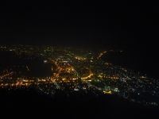 | 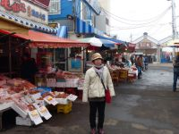 | 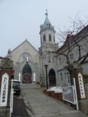 | 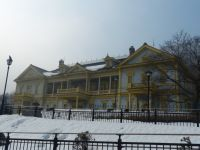 | 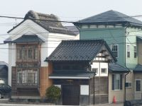 |
| night view | morning market | town 1 | town 2 | town 3 |
We arrived at Chitose air port and left for the hotel in Hakodate by bus. Before long we had dinner which included a whole hose crab called "Kegani". Then we took part in optional tour and went to Hakodate mountain to see the night view. It was said that the shape of Hakodate looked like women's body from the top of the mountain.
Next day we got to the morning market for marine products. Hakodate is very famous for marine products. Then looked around the town which is something different from our town.
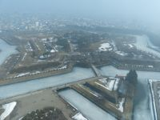 | 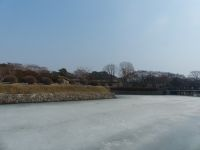 | 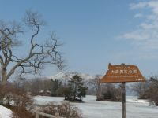 | 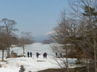 | 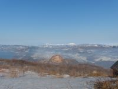 |
| Goryokaku | Goryokaku | Onuma park | Onuma park | Syowa new mountain |
Goryokaku which I really wanted to see was famous for the form of a unique castle in Japan. I went up to the top of the tower next to Goryokaku and had a view of the star-shaped castle.
Although it was built from 1857 through 1866 to defend against foreign countries, it was used for the Meiji Restoration war.
A star fort is a fortification in a style that evolved during the age of gunpowder when the cannon came to dominate the battlefield. It was first seen in the mid-15th century in Italy.
I was surprised that Onuma semi-natural park was covered with snow and the lake there was frozen, in spite of the end of March. And it was so huge that I felt that was Hokkaido.
Then for lunch we went to a sea food restaurant near that park in Town Mori. We ate a cuttlefish stuffed rice called "Ika-meshi", grilled lamb and vegetables called "Tyan Tyan Yaki" and so on.
Next, by a cable car I climbed up a mountain where we could see Syowa new mountain and around there.
We could look about not only Syowa new mountain but also a nice view including Lake Toya.
We arrived in Sapporo and went out to have dinner I reserved before coming. At a beer restaurant near Sapporo station I ate Sushi, lamb, king crab, scallop, potato and a bowl of miso ramen. All of these are famous for sea products of Hokkaido .
Lunch and dinner was option that day.
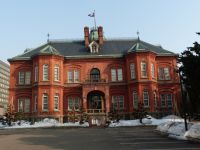 | 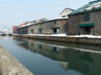 | 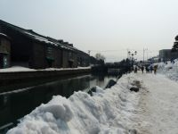 | 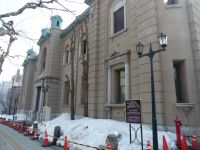 | 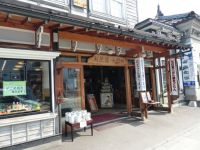 | 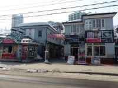 |
| Old federal office | Otaru canal | Otaru canal | The bank museum | town 1 | town 2 |
Before starting for our tour I went out to see old federal office called "Red Brick" and the morning market for sea food.
Then I visited Otal for the first time and walked around Otal canal and town, The Bank of Japan, Otaru Museum, Museum of modern art and so on.
Otal canal sounded nostalgic for me. It was only when I got there that I realized my too much emotion.
{kind=link}
{kind=link}
{kind=link}
{kind=link}
{kind=link}
{kind=link}
{kind=link}
{kind=link}
{kind=link}
{kind=link}
{kind=link}
{kind=link}
{kind=link}
{kind=link}
{kind=link}
{kind=link}